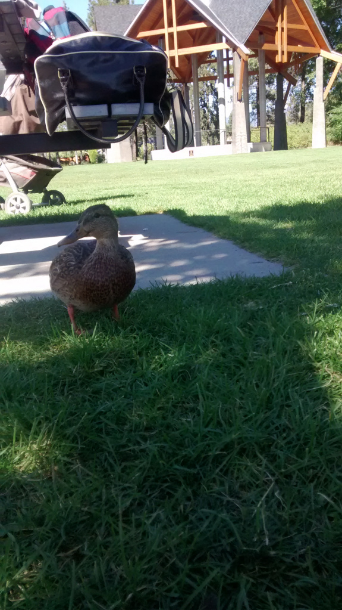
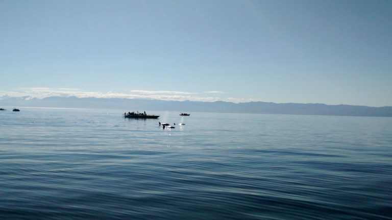
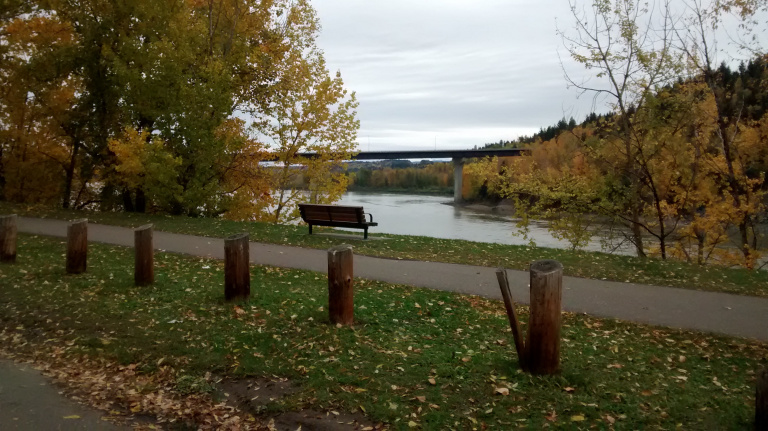

Я — инженер электрик с опытом работы с оборудованием
220/380 и системами учета электроэнергии. Я же
специалист по оптимизации работы склада: увеличение
производительности труда, внедрение ноу-хау, внедрение
систем управления складом, складская экспертиза. Теперь я
еще и студент колледжа по специальности – инженер связи
(communication engineering technology – wireless).
Моя очаровательная супруга дипломированный переводчик –
синхронист Английского, Испанского. Телевизионный переводчик
и преподаватель с огромным опытом работы.
И мы едем в Брендон!!!
Фото дня
10/21/2014
Вот подумал показывать что же такое БК, буду каждый день
выкладывать по одной фотографии. Не знаю, получится ли делать
это месяц, как того хочется, но на пару недель думаю моего
запала хватит 🙂
У меня насобералось некоторое количество фото из нашей
обзорной поездки. Они все сделаны телефоном, однако, надеюсь
смогут почмочь вам составить представление, что это за зверь
такой BC.


З.Ы. Теперь то мы уже обзавелись хорошим фотоаппаратом так,
что продожение обещает быть покачественней.
Каждый кулик свое болото хвалит
10/17/2014
Привет, вот я чуть более серьезно вернулся к блогу, даже не
столько к самому блогу, сколько к ответам на вопросы, что вы мне
присылаете по почте и возник у меня один вопрос.
Вот я в блоге рекламирую жизнь в Мантобе, а так же способ к
ней приобщится посредством иммиграции через образование (учебу в
колледже). Однако я периодически пересекаюсь с людьми, которые
едут учится в Онтарио. Тут то у меня появляется вопрос «Зачем
же?». Я могу понять, что колледжи более разрекламированные,
специальностей побольше, ну и главное, по крайней мере я себя
объясняю такое положение вещей именно этим, жить веселее (города
большие, развлечений валом, погода приятная). Но только если
конечная цель иммиграция, то как-то это рискованно. Я например
уже 2-х человек знаю, которые отучившись в Онтарио переехали
работать в Манитобу, чтобы потом идти по манитобской программе.
Я тут пересилил свою лень и заглянул на сайт иммиграции
Онтарио и увидел то, о чем и так помнил.
http://www.ontarioimmigration.ca/OI/en/pnp/OI_PNPSTUDENTS_JOB.html
а именно — «Opportunities Ontario has a target of 2,500 nominations
in 2014» для меня, например, это кажется сродни шансу выиграть в
лотерею.
Так к чему же столько букв можете спросить вы. А почему бы тем кто выбирает Онтарио не подумать о Британской Колумбии? Климат и природа здесь такие, что остальная Канада нервно курит в сторонке, города не меньше, а следовательно возможностей трудоустройства тоже много, а главное что нет такого дурацкого ограничения в иммиграционной программе http://www.welcomebc.ca/new_pnp/About-the-BC-PNP/Skills-Immigration/International-Graduates.aspx. Конечно с Манитобой или Саскачеваном это всеравно не сравнится, но уже лучше чем в Онтарио. Вот я недавно узнал, что оч. неплохой колледж даже в Принце Джордже есть, я уж не говорю про BCIT.
Ну и таки да, вы меня правильно поняли, нам тут живется весело и хорошо, но мы всегда будем рады новым друзьям 😉
Стоит почитать
10/14/2014
Привет, пока я немного сачкую, и пишу в блог довольно редко, советую вам, друзья обратить внимание на блог коллеги по счастью 🙂 http://simferopolbrandon.wordpress.com/ Я этот начинающий блог прочитал с большим интересом, да и однозначно, уже о жизни в Брендоне вы сможете больше узнать из блога Эльдара, в то время как мне судьба, уже судя по всему уоготовила участь повествовать о Британской Колумбии.

Hola amigos!
10/10/2014
Привет опять, как не странно, но я таки не забил на блог, и очень хочу продолжать ….
Утром мажу бутерброд —
Сразу мысль: а как народ?
И икра не лезет в горло,
И компот не льется в рот!
Вот и у меня примерно также, помню, помню 🙂
Только, вот получается не очень, в силу чисто технических обстоятельств. Так получается, что времени писать дома у меня нет, дома жена — красавица и карапуз растет стремительно ) Раньше я, кстати, думал, что в жизни есть два уроня, и на второй переходишь после женитьбы, а подиж-то оказывается есть и бонус уровень. Но это не тема блога. Так вот, время писать есть только на работе, но на работе нет кирилической клавиатуры :(. Вот сейчас я набираю тект на телефоне, и из-за маленькой диагонали экрана это то еще удоволствие. Прям даже не знаю как из этой ситуации выйти, потэтому пока — краткость, краткось и еще раз краткость.
Но все же не могу не поделится парочкой новостей.
К нам приехала мама супруги. Мы теперь даже высыпаемся :). Летела с пересадкой в Амстредаме и прямиком в Ванкувер. Говорит, что проблем небыло вообще никаких, хотя язык знает на уровне школы и нескольких месяцев занятий с репититором. Мы то переживали, наготовили ей бумажек с обяснениями для таможни, если вдруг потеряется и т.д. и т.п., а оказалось, что взрослый человек в здравом уме справится с перелетом даже с очень небольшим знанием английсуого. В следующий раз будет, наверно, к нам лететь с двумя пересадками, это всреднем на 200 — 300 долларов дешевле.
Маме здесь нравится, а уж нам то как нравится, что она здесь, не передать словами.
Ну и вторая новость, в связи с приездом мамы мы сьездили в отпуск, проехали значительную часть БК, пожили немного в Виктории и Келоуне. Фотки и пост будут попозже, когда разбирусь с тем, как же писать много текста.
Спасибо вам, друзья, до встречи.
Поздравления
08/21/2014
Привет, хочу поздравить Женю с Димой с получением манитобской номинации и, как я понял, уже даже отправленными документами в Сидней. Наконец-то!!! Мы за вас рады очень сильно, наверно даже рады вместе с вами ;). Теперь-то я могу считать, что силы потраченные на ведения блога не были потраченными впустую, потому, как учеба это всего лишь пол дела и главное таки ПМЖ.
Для всех тех, кто читает мой блог, но не в курсе дела, ребята наверное первые из тех, кто получил номинацию, и даже отправил документы на федеральный этап, который, по моему мнению, простая формальность. Думаю к новому году им будет приятный подарок от правительства Канады :).
Это я собственно к чему? Кроме радости за друзей (таки да, у нас тут в Канаде все дружны, приезжайте к нам — не пожалеете :)), хочу напомнить тем, кто еще в процессе — у вас все получится. А тем, кто только собирается: хватит собираться, давайте делать.
Канадское гражданство
08/20/2014
Много людей меня спрашивают, а не боюсь ли я каких-то осложнений при получении канадского гражданства, подкрепляя вопрос двумя типами доводов:
— «Мы же подписывали бумагу» — долго пытался вспомнить когда, и какую. Таки вспомнил, на провинциальном этапе была бумага суть которой в моем вольном изложении заключается в том, что я изъявляю намерение жить в Манитобе в течении времени которое потребуется доя прохождения федерального этапа. Где-то так, там даже нет обязательства залендится в Манитобе. Ну а я, даже, почти два года там прожил и только потом переехал.
— «Где-то, когда-то, Пете/знакомому/форумчанину (нужное подчеркнуть) долго не давали паспорт из-за того что он не жил в правильной провинции. Ну тут во первых, никогда я не встречал человека который сказал бы: «это я тот «счастливец». Плюс пожив в Канаде пару лет я просто не представляю себе ситуации, чтоб какой-то канадский чиновник мог так просто нарушить конституцию, говорящую о свободе передвижения. Хотя конечно из Украины, или , не приведи господь, росии, вполне легко. Ну и главное, все эти истории сводятся к тому, что нервов попили, но паспорт таки дали, что в общем-то тоже не жутко.
ак что, я не волнуюсь и вам не советую.
Создал специальный почтовый ящик для вопросов
08/19/2014
Друзья, так, как желающих пообщаться со мной приватно есть 🙂 спешу поделится ситуацией. У меня есть скайп, но так, как распорядок дня очень хаотичный, то все-таки лучше всего со мной связываться по электронной почте. Я даже завел специальный ящик kievbrandon@outlook.com пишите вопросы, которые вы не хотите оглашать, по каким-либо причинам, на этот электронный адрес, постараюсь ответить.
Киев — Брэндон — Принц Джордж
08/05/2014
Привет!
Таки да, мы переехали из ставшего родным Брэндона, и не мение родной Манитобы в город Принц Джордж, как он себя велечает — столицу северной Британской Колумбии.
Предвижу вопрос: «Да как же ты докатился до такого?!! 🙂 «. Все придельно просто — работа. Я вообще-то всегда хотел уехать к океану, и на семейном совете победила БС, а не Новая Скотия. С середины зимы я начал искать работу, удаленно, находясь в Манитобе расслылал тучу резюме. И в результате к середине марта нашел такую работу, которая показалась мне очень стоящей. Суть работы в кратце такая: техник по сборке медоборудования. Если в даватся немного в детали, то начиная от прикутить гайки, до протестировать работоспособность програмного обеспечения.
Так вот работа мне показалось настолько стоящая (восновном в материальном и географическом плане), что я не стал доучиватся в колледже. Кстати, пока искал работу, у меня сложилось впечатление, что для большенства вакансий диплом колледжа не нужен, так, как или нужны просто граматные люди, а дальше всему научат, или нужно инженерное образование. Получается, коледж вроде как «нитонисё», вроде бы диплом это хорошо, но и без него тоже нормально. Но это, правда, я конкретно в области связи/электроники искал работу.
Так вот получается, что я нашел работу, мы взяли в аренду грузовик, погрузили туда все свои вещи и 1800км и 3 дня и мы приеали в Принц Джордж (ПД). И пока у нас наши ожидания только или оправдываются или превышаются. Работа, которая показалась мне сначала, такой себе, временной, на пару лет, дабы обжится в БС, а потом уже искать что-то дальше, пока кажется интересной. Город, фотографии которого из гугла кажутся убожеством оказался прекрасный и зеленый, и теперь у меня уже нет уверенности, что через 2-4 года мы отсюда уедем на юг.
KievBrandon v2.0
07/30/2014
Привет друзья, прошу меня извинить за то, что так долго не писал, у меня просто в жизни произошло немало изменений, два основных мне немного затрудняют блоговедение. Вопервых, я теперь работаю полноценно с понедельника по пятницу, кстати, опять вспомнил сакральное значение термина ПЯТНИЦА!!! :), ну и в свободное от работы время любуюсь сынулей, там каждая минута что-то новенькое. Так что, признаюсь , у меня была даже идея забить на блог, однако ваш интерес заставил меня к нему вернутся, да и самому вобщем-то хочется, я конечно в контексте иммиграции немного устарел (в том смысле, что было это давненько, но на что-то еще сожгусь). К тому же мне есть что написать и про иммиграцию, надеюсь время хватит. Вот например давеча получали визу для мамы жены ( не люблю слово теща, в наше время у него какой-то не самый лестный контекст), так документы отправили в пятницу, а в понедельник уже прислали запрос на паспорт, так мало того еще и дали мультивизу на 8 (ВОСЕМЬ!!!!) лет. Так что прям интересные вещи иногда случаются.
В связи с нехваткой моего времени на то, чтоб много и обстоятельно постить, предлагаю сместить стиль блога в сторону «вопрос-ответ». Как вам такая идея? Напимер вы мне задаете вопрос, и если вам нечего скрывать, тоя отвечаю не личным письмом, а в блоге. Ну, и по возможности, буду свои посты добавлять.